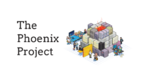

ITOM Framework
Interactive overview — click any element to explore deep-dive content
01 Purpose
Purpose of the ITOM is to deliver your strategy
Corporate Strategy
Digital Strategy
IT-Strategy
Cloud Strategy
Value Proposition (VP)
Operating Model
ITOM
02 Plays / Usecases
Usecases
Post merger integration
Cloud transformation
Agile transformation
Outsourcing
• • •
Frameworks & methods inform the ITOM approach
03 Frameworks and methods
Market frameworks
📋 ITSM Frameworks
ITSM
YaSM
ITIL library
FitSM
ISO/IEC 20000
VeriSM
🏛️ Architecture
IT4IT
TOGAF
NORA
RORA
🔧 Other Frameworks & Methods
Agile
SIAM
SAFe
ISM
COBIT
SFIA
Atos ITOM Framework
Supported by tools, accelerators & services
04 Tools, accelerators and services
Atos Service components and accelerators
🔍 Assessments & Scans
Agile maturity scan
Security scan NIST New
DevOps capability scan
Cloud scan
ITSM maturity scan
Cloud readiness scan
🧭 Exploration & Design
Playbooks Digital / Agile / DevOps
Business simulations
Process redesign
Facilitation Games
Design thinking workshops
Inspiration sessions
System thinking
🛠️ Platform, Advisory & Support
Service Now enablement
Platform and pipeline support
Cloud services
Cloud advisory
🏛️ Architecture & Strategy
IT (Transformation) Strategy
Enterprise Architecture
🔄 Delivery & Change
Project and program management
Transformation and transition management
Coaching en training
05 Visual aids
Visual toolkit
Business Model Canvas
Value Proposition Canvas
(IT)OM Canvas
Reference cases
Reference cases
• • •
• • •
• • •
Training
Training
ITIL4
Agile in practice
Introduction to Agile
🎮 Business Simulations

The Phoenix ProjectMarsLander
Hollywood Dreams